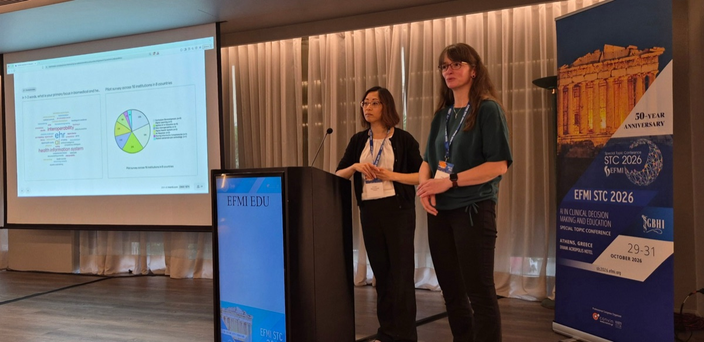
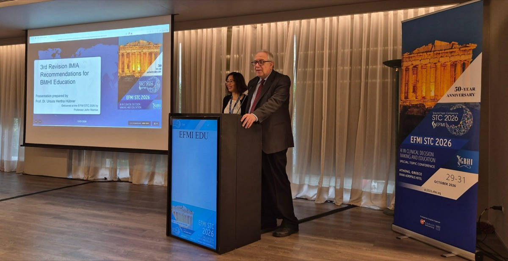
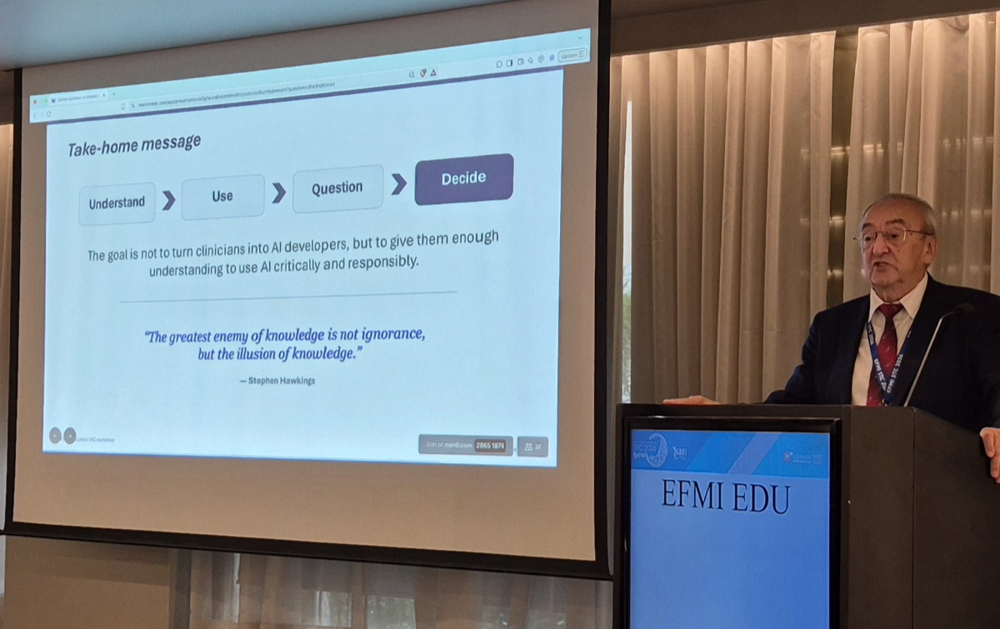

EFMI STC 2026 – WG EDU open-door workshop
· Erechthion room, Divani Acropolis Hotel, Athens, Greece
About
Future education in health informatics was an open-door workshop of WG EDU (WG4) at the EFMI Special Topic Conference 2026, “AI in clinical decision making and education” (Athens, 29–31 October 2026). Any conference participant could join; WG membership was not needed. We also presented this website at the meeting.
Programme
| Time | Session | With |
|---|---|---|
| 11:00–11:15 | Introduction and objectives | Kaija Saranto |
| 11:15–11:30 | Current activities in education among the participants | Pauleen Mannevaara and Nicole Egbert |
| 11:30–11:45 | The current status of updating the IMIA Recommendations for BMHI education (3rd revision) | John Mantas and Pauleen Mannevaara; presentation prepared by Ursula Hertha Hübner |
| 11:45–12:00 | Challenges for teaching AI | George Mihalas |
| 12:00–12:20 | What does the future look like? Open discussion | Moderated by Ricardo Correia |
| 12:20–12:30 | Closing remarks |
Times are Athens local time (EET). Participants answered live questions on Mentimeter during the workshop.
Photos



Have more photos or slides from this workshop? Send them to the WG chairs, with the author's permission, and we will add them here.
Education papers and keynotes at STC 2026
Contributions on BMHI education across the whole conference, selected by WG EDU. See all EFMI conferences on the Conference papers page.
Loading the list…
Presentations and documents
- Workshop programme flyer (JPG image)

TO VALIDATE Slides of the workshop to be supplied by the speakers.